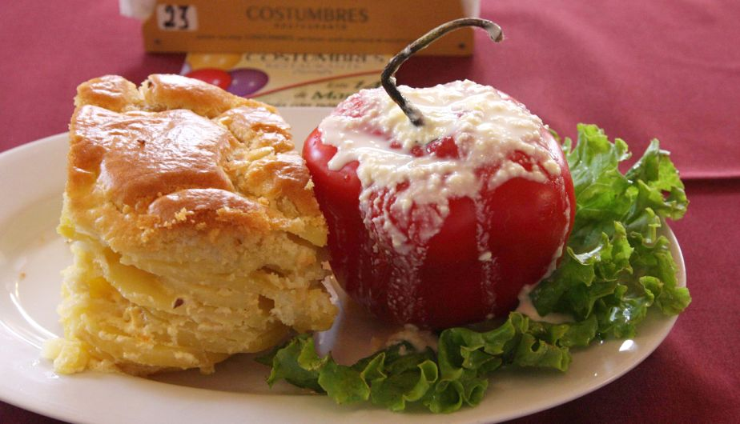
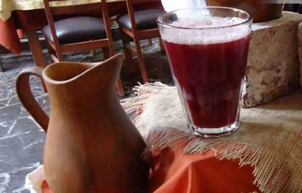

Gastronomía
La comida arequipeña ha alcanzado fama por poseer la mayor diversidad respecto a otros departamentos del Perú, gracias a la amplia despensa que posee en su campiña y sus valles así como su amplia costa. Sobresale por el buen gusto, gracias al uso de condimentos y formas de preparación, tanto andinas como introducidas por los europeos. Una de las características peculiares de la comida son los picantes en infinidad de combinaciones, esto hace que los lugares donde se expenden se llamen "Picanterías". La diversidad de esta cocina mestiza se puede resumir en la existencia de caldos o chupes para cada uno de los días:
- Lunes : "Chaque"
- Martes : "Chairo"
- Miércoles : "Pebre"
- Jueves : "Timpusca"
- Viernes : "Chupe de Camarones"
- Sábado : "Tiempo de Rabo"
- Domingo : "Caldo blanco de Lomos"
Es conocida en el país y en el mundo por la exquisitez de sus guisos y potajes preparados a fuego de leña y en ollas de barro. Entre los más conocidos se encuentran el Chupe de Camarones, Ocopa Arequipeña, Rocoto Relleno, Adobo de Chancho, Soltero de queso, Pastel de papas, Costillar frito, Cuy Chactado, Locro de pecho por mencionar algunos. Como postre se recomienda el Queso helado, los Buñuelos y para beber, además de la Chicha de Jora, la Cerveza y el Anís nájar.
Rocoto Relleno

Queso Helado

Chicha de Jora
